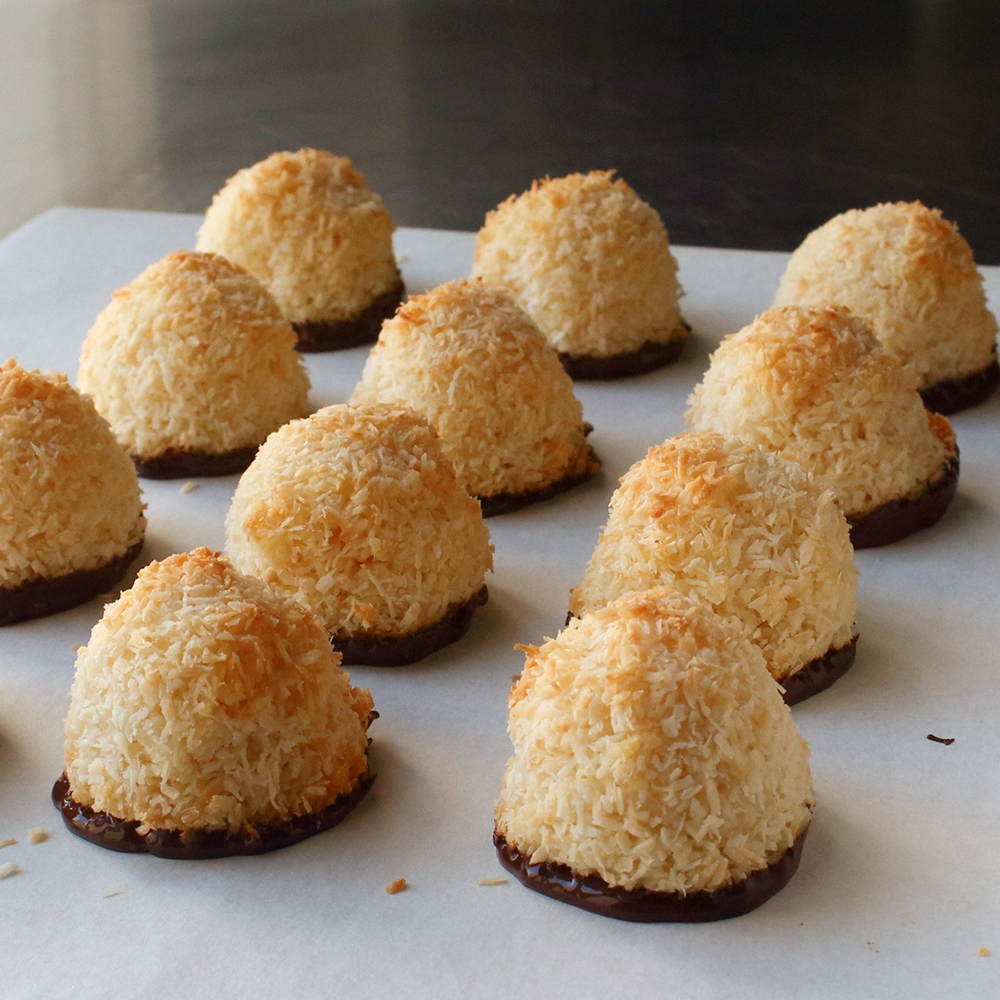

Chocolate-Dipped Coconut Macaroons

Even first-time cookie makers can pull off super moist, tender, chewy macaroons. Using sweetened condensed milk streamlines the operation and produces a very nice texture. Simple to make and easy to transport, these are the ultimate cookies to bring to any potluck. Just stick an almond inside each macaroon if you want to relive that chocolate-coated coconut-filled candy bar of your childhood.
Ingredients
- ¾ cup sweetened condensed milk
- ¼ teaspoon almond extract
- 1 ½ teaspoons vanilla extract
- ¼ teaspoon fine salt
- 1 large egg white
- 3 cups shredded unsweetened coconut
- 1 (4 ounce) bar semisweet chocolate, chopped, or to taste
Steps
- Preheat the oven to 350 degrees F (175 degrees C).
- Combine condensed milk, almond extract, vanilla extract, salt, and egg white in a bowl. Whisk until thoroughly combined. Add about 2 1/3 cups shredded coconut. Mix with a spatula until mixture is sticky and holds together. Form into balls using a sorbet scoop.
- Roll balls in remaining coconut. Space macaroons evenly onto a silicone-lined baking sheet.
- Bake in the preheated oven until golden, about 20 minutes. Let cool to room temperature, at least 20 minutes.
- Meanwhile, place 3/4 of the chocolate in top of a double boiler over simmering water. Stir frequently, scraping down the sides with a rubber spatula to avoid scorching, until chocolate is melted, about 5 minutes. Remove from heat and stir in the rest of the chocolate until it melts.
- Dip the base of each cooled macaroon about 1/8 inch into the chocolate. Place cookies, chocolate-side down, on parchment paper. Let chocolate harden completely.